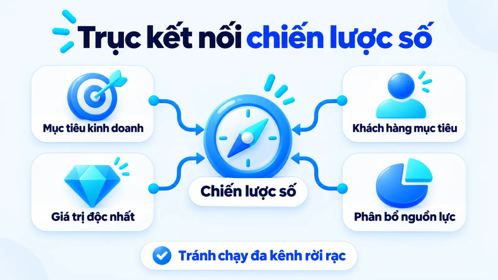
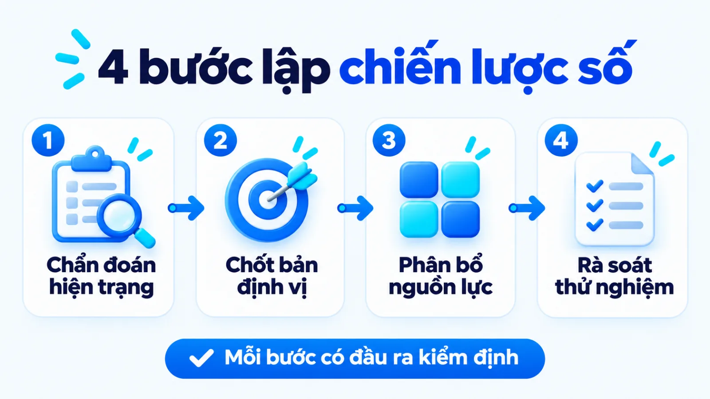
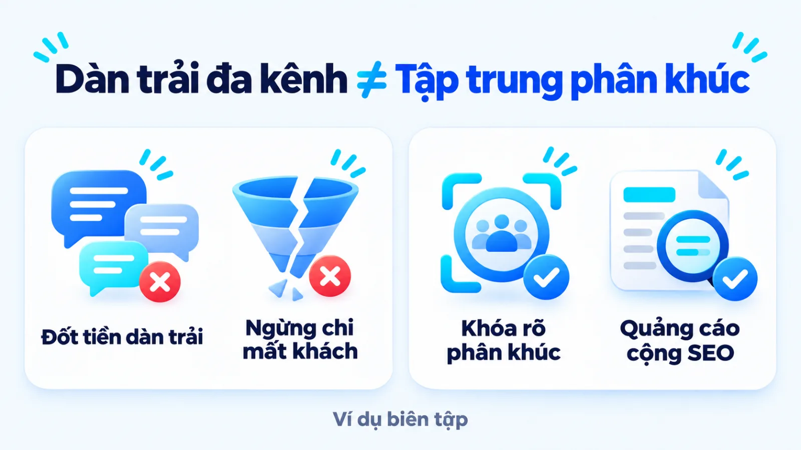
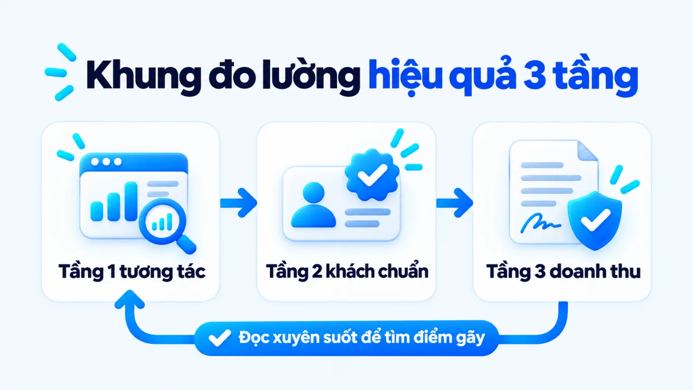

Chiến lược Digital Marketing là gì, cách lập
Trả lời câu hỏi chiến lược Digital Marketing là gì, đây là khung quyết định dài hạn xác định doanh nghiệp phục vụ phân khúc khách hàng nào trên môi trường số, bằng đề xuất giá trị gì và ưu tiên phân bổ nguồn lực vào đâu để đạt mục tiêu kinh doanh. Trong thực tế, nhiều doanh nghiệp vừa và nhỏ mở cùng lúc fanpage, kênh video, website và chạy quảng cáo nhưng doanh thu vẫn thất thường vì nhầm danh sách công cụ với định hướng xuyên suốt. Khi ngân sách hữu hạn, người phụ trách cần chọn đúng điểm chạm giải quyết nhu cầu mua thật và biết rõ hạng mục nào chưa nên đầu tư. Tôi là Lê Tuấn Việt, Marketing Leader tại TAKI Group. Trong bài viết này, tôi làm rõ ranh giới giữa ba cấp hoạch định, nguyên tắc chọn phương thức theo nguồn lực và cách đọc dữ liệu đo lường thực tế.
- Đăng ngày
- Cập nhật

Tóm tắt nhanh
- Chiến lược Digital Marketing xác định phân khúc khách hàng, định vị giá trị và trọng tâm nguồn lực, thay vì liệt kê các kênh quảng cáo rời rạc.
- Doanh nghiệp vừa và nhỏ cần tách rõ chiến lược dài hạn, kế hoạch phân bổ KPI theo quý và chiến thuật tối ưu hàng tuần trên từng kênh.
- Hiệu quả chiến lược cần đọc qua khung ba tầng gồm tương tác, khách đạt chuẩn và doanh thu xác nhận để tránh mở rộng nhầm kênh rác.
Mục lục bài viết8 phần
Chiến lược Digital Marketing là gì?
Chiến lược Digital Marketing là khung quyết định dài hạn xác định doanh nghiệp phục vụ phân khúc nào trên môi trường số, bằng USP (đề xuất giá trị độc nhất) gì và dồn nguồn lực vào đâu nhằm đạt mục tiêu kinh doanh. Hiểu đúng chiến lược Digital Marketing là gì cần nắm rõ ba thành phần cốt lõi.
Khi tìm hiểu khái niệm Digital Marketing trong hệ thống Marketing cho doanh nghiệp, nhiều SME (doanh nghiệp vừa và nhỏ) nhầm việc mở fanpage hay chạy quảng cáo là đã có chiến lược. Thực chất, chiến lược nằm ở lý do chọn điểm chạm này và từ chối điểm chạm khác trong cùng kỳ vốn.
Theo khảo sát tháng 5/2024 của Gartner trên 395 giám đốc và lãnh đạo tiếp thị tại Bắc Mỹ cùng châu Âu, ngân sách tiếp thị năm 2024 đã giảm còn 7.7% tổng doanh thu công ty, và 64% lãnh đạo thiếu ngân sách thực thi trọn vẹn chiến lược.

Ba thành phần cốt lõi của một chiến lược số
Để bản định hướng không biến thành danh sách đầu việc rời rạc, người phụ trách cần khóa chặt ba thành phần cốt lõi của chiến lược tiếp thị số gồm:
- Mục tiêu và khách chuẩn: Quy đổi mục tiêu doanh thu thành số khách tiềm năng đạt chuẩn cần tạo ra mỗi kỳ.
- Định vị trên điểm chạm: Thể hiện rõ lý do người mua chọn giải pháp của bạn thay vì đối thủ trên trang đích.
- Nguyên tắc phân bổ vốn: Xác định tổ hợp phương thức ưu tiên, trần ngân sách, nhân sự phụ trách và những hạng mục chưa làm trong kỳ.
Lợi ích của chiến lược Digital Marketing với SME
Khi nguồn vốn mỏng, lợi ích của chiến lược Digital Marketing là bảo vệ doanh nghiệp khỏi sự dàn trải: cắt khoản chi lệch phân khúc sinh lời, đồng bộ thông điệp từ khâu tìm kiếm đến tư vấn bán hàng và tạo dữ liệu chuẩn trước khi mở rộng.
Khi đồng hành cùng hơn 200 doanh nghiệp trong chương trình Coaching tại TAKI Group và tham gia thẩm định kế hoạch giúp 70% khách hàng đạt mục tiêu theo giai đoạn, tôi thấy điểm nghẽn lớn nhất là thiếu thứ tự ưu tiên. Mở thêm kênh không phải là chiến lược.
Chiến lược Digital Marketing là gì, khác gì kế hoạch
Điểm phân biệt chiến lược Digital Marketing với kế hoạch và chiến thuật nằm ở cấp quyết định: chiến lược chọn thị trường cùng trọng tâm vốn, kế hoạch chia ngân sách kèm KPI (chỉ số đánh giá hiệu quả) theo kỳ, còn chiến thuật là thao tác từng kênh. Bảng sau đối chiếu bốn tiêu chí chính.
| Tiêu chí | Chiến lược Digital Marketing | Kế hoạch và Chiến thuật |
|---|---|---|
| Câu hỏi chính | Phục vụ phân khúc nào, bằng giá trị gì và ưu tiên kênh số nào? | Triển khai khi nào, ngân sách bao nhiêu và tối ưu thao tác sao? |
| Đầu ra | Bản định vị giá trị, chân dung khách hàng và ma trận chọn kênh | Bảng ngân sách theo kỳ, lịch nội dung, KPI và quy trình thao tác |
| Kỳ rà soát | Đánh giá sau mỗi sáu đến mười hai tháng hoặc khi thị trường đổi | Rà soát kế hoạch theo tháng, quý và chỉnh chiến thuật hàng tuần |
| Hậu quả sai | Nhắm sai tệp khách hàng, càng đẩy thực thi càng đốt ngân sách | Chậm tiến độ hoặc lệch chi phí ngắn hạn nhưng sửa được trong kỳ |
Giới hạn khi đọc bảng: ở SME, ba cấp độ thường gộp trong một tài liệu nhưng vẫn phải tách bạch khi chẩn đoán lỗi. Nhiều nơi xếp lẫn chiến lược với kênh mạng xã hội, video hay tìm kiếm giọng nói; hãy xem bài cách chọn chiến thuật marketing để tránh lấy thao tác ngắn hạn thay cho định hướng.
Ma trận chọn phương thức triển khai theo nguồn lực
Ma trận chọn phương thức triển khai tiếp thị số là công cụ giúp SME quyết định tổ hợp kênh dựa trên độ gấp doanh thu, chu kỳ mua và trần ngân sách. Thay vì chia đều tiền cho mọi nền tảng, doanh nghiệp nên gom sáu phương thức cốt lõi vào ba nhóm dưới đây.
Tối ưu hóa công cụ tìm kiếm và tiếp thị nội dung
Nhóm đón nhu cầu chủ động gồm SEO (tối ưu hóa công cụ tìm kiếm) và tiếp thị nội dung (Content Marketing). Theo SEO Starter Guide của Google Search Central năm 2024, SEO giúp công cụ tìm kiếm hiểu trang và giúp người dùng quyết định truy cập, nhưng cần vài giờ đến vài tháng để phản ánh kết quả, đồng thời hệ thống xếp hạng của Google ưu tiên nội dung vì người đọc.
Tiếp thị truyền thông xã hội và tiếp thị video
Nhóm mở rộng độ phủ và minh họa trực quan gồm tiếp thị truyền thông xã hội (Social Media Marketing) cùng tiếp thị video (Video Marketing). Hai phương thức này giúp sản phẩm xuất hiện hàng ngày, nhưng cần chi phí sản xuất đều và dễ lệch sang tương tác ảo nếu thiếu đường dẫn trang đích.
Quảng cáo trả phí và tiếp thị qua email giữ chân
Nhóm thứ ba kết hợp PPC (quảng cáo trả phí theo lượt nhấp) để tạo đơn nhanh và tiếp thị qua email (Email Marketing) để giữ chân khách hàng. Theo khảo sát năm 2024 của Gartner trên 395 lãnh đạo tiếp thị Bắc Mỹ và châu Âu, kênh số chiếm 57.1% chi tiêu truyền thông trả phí; do đó khi chọn giữa SEO và Google Ads, SME nên dùng email chăm sóc khách cũ để giảm chi phí.
Bảng dưới đây đối chiếu sáu phương thức tiếp thị số theo điều kiện ưu tiên và sự đánh đổi nguồn lực.
| Phương thức | Phù hợp ưu tiên khi | Đánh đổi và điều kiện cần |
|---|---|---|
| Kênh SEO | Khách chủ động tra cứu giải pháp, muốn giảm chi phí nhấp chuột | Độ trễ vài tuần đến vài tháng; cần website chuẩn và bài viết sâu |
| Nội dung số | Chu kỳ cân nhắc dài, cần giải thích cơ chế và xây dựng niềm tin | Tốn công nghiên cứu; thất bại nếu bài viết hời hợt, thiếu chiều sâu |
| Quảng cáo PPC | Cần dòng tiền nhanh, ra mắt giải pháp hoặc thử nghiệm trang đích | Ngừng chi tiền là mất lưu lượng; lỗ vốn nếu trang đích chuyển đổi kém |
| Mạng xã hội | Cần duy trì hiện diện thương hiệu, tương tác và phân phối nội dung | Độ phủ phụ thuộc thuật toán; dễ lệch sang tương tác ảo không ra đơn |
| Kênh video | Sản phẩm cần minh họa trực quan thao tác, kết quả hoặc cảm xúc | Đòi hỏi kịch bản chặt và kỹ năng quay dựng; chi phí sản xuất cao |
| Kênh email | Đã có tệp khách hàng cũ, kinh doanh B2B hoặc sản phẩm mua lặp lại | Phụ thuộc chất lượng danh sách thu thập; phản tác dụng nếu gửi thư rác |
Giới hạn khi đọc bảng: số liệu Gartner năm 2024 đo tại Bắc Mỹ và châu Âu. Với SME Việt Nam, tôi ưu tiên chọn tối đa hai phương thức bổ trợ nhau trong một quý để đội ngũ làm tới cùng.
Cách tạo chiến lược Digital Marketing trong 4 bước
Cách tạo chiến lược Digital Marketing khả thi cho SME gồm bốn bước tuần tự: đánh giá hiện trạng và đối thủ, chốt chân dung khách hàng kèm USP, phân bổ ngân sách theo phễu, rồi vận hành thử nghiệm. Cùng bài xây dựng chiến lược tiếp thị số và marketing số cho startup, bốn bước sau khóa rõ đầu ra kiểm.

Bước 1: Đánh giá hiện trạng và đối thủ cạnh tranh
Rà soát dữ liệu lịch sử trên website, chi phí thu hút một khách tiềm năng hiện tại và đối chiếu với ba đến năm đối thủ trực tiếp để tìm khoảng trống chủ đề họ làm còn mỏng.
Đầu ra: Bảng chẩn đoán tài sản số hiện có, điểm nghẽn chuyển đổi lớn nhất và danh sách khoảng trống chủ đề.
Bước 2: Chốt chân dung khách hàng, USP và mục tiêu
Xác định phân khúc khách hàng có biên lợi nhuận tốt, rào cản khiến họ chần chừ cùng tuyên bố USP giải quyết rào cản đó, rồi tính ngược từ doanh thu ra số khách chuẩn cần giao.
Đầu ra: Bản mô tả chân dung người mua gắn hành vi tìm kiếm, câu định vị trên trang đích và bảng mục tiêu tầng.
Bước 3: Phân bổ ngân sách và phối hợp kênh theo phễu
Chia nguồn lực thành hai giỏ gồm quảng cáo tạo đơn ngắn hạn và kênh tích lũy dài hạn trên website chuẩn cùng nội dung SEO, bảo đảm thông điệp quảng cáo khớp đồng nhất với trang đích.
Đầu ra: Ma trận phân bổ ngân sách theo tỷ trọng phần trăm, sơ đồ luồng điểm chạm và người phụ trách kênh.
Bước 4: Vận hành thử nghiệm và rà soát điểm nghẽn
Chạy thử nghiệm trong hai đến bốn tuần đầu với ngân sách kiểm soát để đo phản ứng thị trường, đối chiếu tỷ lệ chuyển đổi hàng tuần nhằm sửa trang đích hoặc cắt sớm kênh kém chuẩn.
Đầu ra: Biên bản rà soát dữ liệu sau chu kỳ thử nghiệm đầu tiên, chỉ rõ điểm gãy và quyết định chia vốn.
Ba sai lầm làm lệch chiến lược ở doanh nghiệp
Ba sai lầm phổ biến khiến chiến lược tiếp thị số của SME sớm đứt gãy gồm: mở đồng loạt nhiều kênh theo phong trào khi chưa rõ USP, đánh đồng chỉ số tương tác bề nổi với doanh thu, và rút ngân sách khỏi kênh tích lũy quá sớm.
- Mở nhiều kênh khi chưa rõ USP: Mở thêm kênh theo đối thủ nhưng chỉ đăng vài bài sơ sài rồi bỏ trống, làm lãng phí chi phí khởi tạo.
- Tối ưu theo chỉ số bề nổi: Chạy theo lượt nhấp giá rẻ hoặc biểu mẫu rác mà không lọc khách chuẩn, khiến đội bán hàng quá tải khi gọi.
- Đo kênh dài hạn bằng thước đo ngắn hạn: Kỳ vọng bài SEO ra đơn ngay tuần đầu như quảng cáo, dẫn tới cắt vốn đúng lúc trang vừa lên hạng.

Ví dụ biên tập, không phải kết quả khách hàng thật
Đối chiếu cách phân bổ vốn tại công ty nội thất văn phòng
Một công ty nội thất văn phòng B2B (doanh nghiệp bán cho doanh nghiệp) tại Hà Nội trước đây dồn hết tiền chạy quảng cáo tin nhắn giảm giá chung và giao một nhân sự viết bốn kênh. Kết quả là nhiều hỏi lẻ nhưng ít hợp đồng; ngừng quảng cáo là mất khách.
Khi sửa theo khung chiến lược, đơn vị khóa phân khúc văn phòng vừa, dành phần lớn vốn chạy quảng cáo tìm kiếm từ khóa báo giá thi công để giữ dòng tiền, phần còn lại viết bài dự toán chuẩn SEO để giảm dần chi phí quảng cáo.
Khung đo lường hiệu quả và giới hạn dữ liệu
Khung đo lường hiệu quả chiến lược Digital Marketing chuẩn xác phải tách bạch ba tầng dữ liệu từ GA4 (Google Analytics 4) đến CRM (hệ thống quản trị quan hệ khách hàng): tín hiệu tương tác, khách đạt chuẩn và doanh thu xác nhận. Bảng sau hướng dẫn cách đọc ba tầng.
| Tầng dữ liệu | Chỉ số và nguồn dữ liệu | Ý nghĩa và giới hạn khi đọc |
|---|---|---|
| 1. Tương tác | Lượt hiển thị, lượt nhấp, CTR (tỷ lệ nhấp) trên Search Console và GA4 | Đo sức hút và độ khớp ý định tìm kiếm; chưa phản ánh doanh thu |
| 2. Khách chuẩn | Sự kiện chuyển đổi GA4, biểu mẫu, cuộc gọi Ads và khách chuẩn CRM | Đo sức thuyết phục của trang đích; cần lọc bỏ liên hệ trùng lặp |
| 3. Doanh thu | Số đơn thành công, doanh thu thực thu, chi phí thu hút và hoàn vốn | Thước đo cuối để mở rộng ngân sách; có độ trễ theo chu kỳ chốt đơn |
Giới hạn khi đọc bảng: tài liệu năm 2024 của Google Search Console Help chỉ đo bốn chỉ số gồm lượt nhấp, hiển thị, CTR và vị trí trung bình, còn hướng dẫn năm 2023 của Nielsen Norman Group tách rõ macro conversion (chuyển đổi vĩ mô) tạo doanh thu với chuyển đổi vi mô trước đó. Ở nhánh trả phí, Google Ads Help năm 2024 đo hành động sau tương tác quảng cáo, và Google Analytics Help năm 2024 dùng attribution (quy kết) để phân bổ đóng góp giữa các điểm chạm.

Lưu ý thực tế khi đối chiếu báo cáo đa kênh tại SME
Tại dự án cố vấn Marketing cho Hệ thống Y Đa khoa TOMEC (tháng 8/2025 đến tháng 8/2026) do tôi phụ trách, việc đo sát chất lượng chuyển đổi giúp tăng 40% khách tiềm năng và giảm 54% CPL (chi phí mỗi khách tiềm năng), từ 1,2 triệu xuống 550.000 đồng mỗi data. Tại dự án Uyên Uyên Mart (tháng 5/2025 đến tháng 5/2026), đồng bộ điểm chạm góp phần tăng 45% lượt khách và nâng doanh thu từ 3 lên 6 tỷ đồng mỗi tháng (tăng 100% cùng kỳ).
Câu hỏi thường gặp về chiến lược Digital Marketing
Ngân sách ít nên ưu tiên làm SEO hay chạy quảng cáo trước?
Khi cần dòng tiền ngay trong tháng đầu, doanh nghiệp nên dành ngân sách kiểm soát cho quảng cáo tìm kiếm nhắm từ khóa có ý định mua cao. Song song đó, hãy dựng trang đích và bài viết cốt lõi vì SEO cần vài tuần đến vài tháng mới tạo lưu lượng đều.
Khi nào doanh nghiệp chưa nên mở rộng thêm kênh tiếp thị số?
Không, doanh nghiệp chưa nên mở thêm kênh mới khi kênh chủ lực hiện tại chưa chuyển đổi ổn định từ lượt truy cập sang khách tiềm năng đạt chuẩn. Nếu trang đích còn thoát trang cao, việc thêm mạng xã hội hay video chỉ làm nhân rộng điểm nghẽn và phân tán vốn.
Bao lâu nên rà soát và điều chỉnh chiến lược tiếp thị số?
Khung chiến lược gồm phân khúc khách hàng, định vị giá trị và nguyên tắc phân bổ vốn nên được rà soát theo quý hoặc nửa năm. Ngược lại, các chỉ số cấp chiến thuật như tỷ lệ nhấp và chi phí mỗi khách đạt chuẩn cần kiểm tra hàng tuần.
Vì sao lượt truy cập website tăng nhưng doanh thu đứng yên?
Lượt truy cập tăng nhưng doanh thu đứng yên thường do nội dung thu hút sai ý định tìm kiếm hoặc trang đích thiếu thông điệp thuyết phục. Bạn cần tách báo cáo từng trang đích trong GA4 và đối chiếu trực tiếp với số khách đạt chuẩn trong CRM.
Khi nào cần phối hợp tiếp thị nội dung, video và mạng xã hội?
Có, doanh nghiệp cần phối hợp ba phương thức này khi sản phẩm có chu kỳ cân nhắc dài hoặc cần minh họa trực quan để xây niềm tin. Khi đó, bài viết trên web giúp đón tìm kiếm tự nhiên, còn video và mạng xã hội phân phối lại thông điệp.
Kết luận
Giá trị cốt lõi của chiến lược tiếp thị số nằm ở kỷ luật chọn đúng phân khúc, làm rõ USP và phân bổ vốn theo năng lực chuyển đổi. Ngay trong tuần này, bạn hãy mở bảng chi tiêu tháng gần nhất, xếp từng khoản chi vào ba tầng đo lường và đối chiếu với số khách chuẩn trong CRM.
Khi doanh nghiệp chuẩn bị mở rộng ngân sách hoặc thấy chi phí thu hút khách tăng qua nhiều kỳ, việc sửa từng mẫu quảng cáo lẻ sẽ không còn đủ mà cần một khung hoạch định đồng bộ. Doanh nghiệp của bạn đang vướng ở khâu chọn kênh ưu tiên hay kiểm soát chất lượng chuyển đổi?